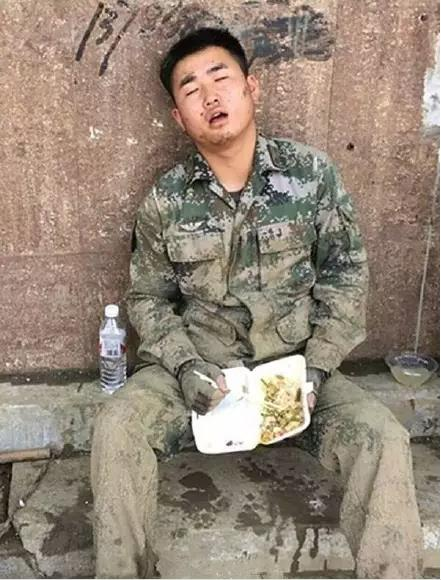
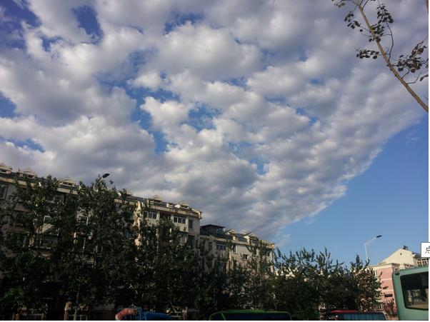
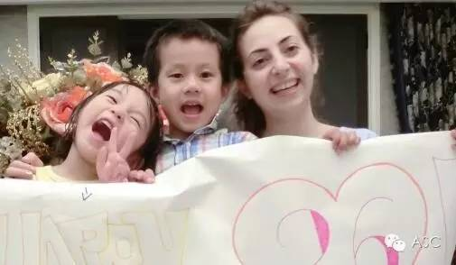
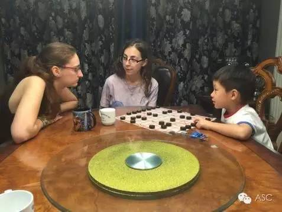
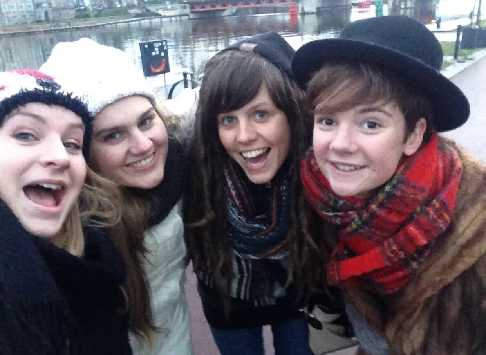
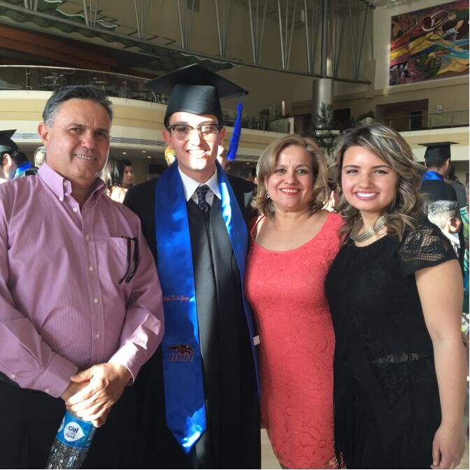

互惠动态
|
|
全国抗洪防涝时，你家互惠生在干嘛？
最近几天朋友圈、微博等都被大雨防洪给刷屏了。许多人调侃，现在有辆豪车不如有条破船。这几天你的朋友圈是这样的？亦或是这样的？
雨太大，路难行！
商场、地铁站、马路上、学校里，各处都是大雨，哪里都有水。早上就被一波又一波的地铁停运，道路不通、上班迟到、小区被淹给刷屏了。
情太浓，爱永驻！

李克强总理冒雨深入洪灾现场，7月5日一早至6日下午，李克强总理赶赴安徽、湖南、湖北察看防汛。30小时“转战”3省汛区，换乘飞机、高铁、汽车，上庄台、登大坝、涉江水，争分夺秒在7个考察点深入防汛。
雨后虹，天太美！
这天空，真的是给水洗过了！好多年没有看过这么干净的天空了，白云上的蓝天，天高九重！

当你改变不了天气，就先改变自己
文化交流的乐趣
如果你邀请了一位优秀的外国互惠生和您住在同一屋檐下，足不出户你就能感受到中外文化的魅力，享受双语文化环境的熏陶。你可以和互惠生一起切磋烹饪技艺、享受美妙音乐、交流彼此家乡的习俗和文化习气，享受足不出户的学习乐趣。

思想碰撞的提升
通过与外国互惠生的共同生活，您和您的孩子将会和外国互惠生建立浓厚的感情。您的家庭 将成为互惠生在中国永远的家，而您在国外也多了一个外国的家！从互惠互利的角度来看，这是两种思想文化和习俗的碰撞，也是两种情感的交融，让您和您的孩子在学习的同时，也收获了另一个家庭的爱。

语言环境的营造
外国互惠生在与您的孩子相处中，自认而然的让您的孩子在课堂之外获得完全日常、沉浸式的第二语言学习环境。日常生活对话、睡前故事聆听等都为孩子语言学习创造了最自然的语言环境，让您的孩子像牙牙学语一般，在纯外国语言环境中，学习和提升语言能力。如果您正计划为孩子进入国际学校学习、出国留学，或正在为出国移民做准备，互惠生的帮助则更大。

选择互惠生，与其说是外语学习，不如说是陪伴式教育。在家庭的氛围中学习，在与外国互惠生的交往中成功融入西方文化，开启孩子出国留学或移民的成功之路！选择ASC互惠生，为您的孩子健康快乐成长助力！

关于互惠，您了解得够多么？
请外国学生来家庭照顾孩子，辅导孩子外语？
只了解这些是不够的！
获取更多信息请参考以下方式：

联系ASC：
电话：86-21-61116069(上海中心）
86-25-66065662（南京中心）
手机：15601666586（可加微信）
Q Q：3259637585
微信：asc-center
邮箱：info@asc-center.com
网站：www.asc-aupair.com

感谢您对我们的关注